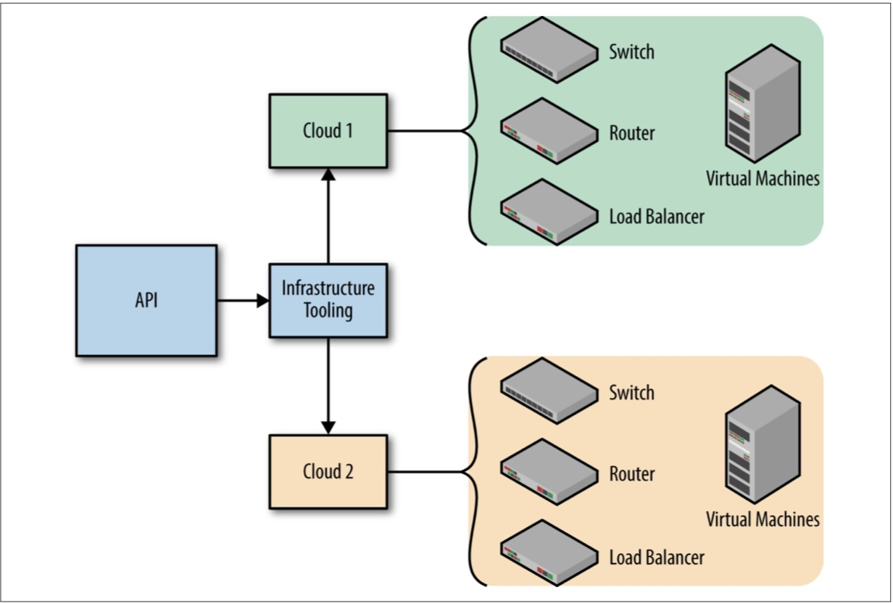

Chapter 5 Developing Infrastructure Applications
When building applications to manage infrastructure, you need to consider what APIs you will expose as much as what applications you will create. The APIs will represent the abstractions for your infrastructure, while the applications provide and consume APIs in the infrastructure.
It is important to have a firm grasp on why both are important and how you can use them to your advantage in creating scalable, resilient infrastructure.
In this chapter, we will give a fictional example of a cloud native application and API that go through normal cycles for an application. If you want more information on managing cloud native applications, please see Chapter 7.
Designing an API
The term API here is dealing with the infrastructure representation in a data structure and not concerned with how that representation is exposed or consumed. It is common to use an HTTP RESTful endpoint to communicate data structures, but the implementation is not important for this chapter.
Evolving infrastructure requires evolving the applications that support the infrastructure. The feature set for these applications will change over time, and thus infrastructure will implicitly evolve. As infrastructure continues to evolve, so must the applications that manage it.
Features, needs, and new advances in infrastructure will never stop. If we’re lucky, the cloud provider APIs will be stable and not change frequently. As infrastructure engineers, we need to be prepared to react appropriately to these needs. We need to be ready to evolve our infrastructure and the applications that support it.
We must create applications that can be scaled and also be ready to scale them. In order to do this, we need to understand the nuances of making large changes to our applications without breaking the existing flow of the application.
The beauty of engineering applications that manage infrastructure is that it liberates the operator from the opinions of others.
The abstractions used in an application are now up to the engineer to craft. If an API needs to be more literal, it can be; or if it needs to be opinionated and heavily abstracted, it can be. Powerful combinations of literal and abstracted definitions can give operators exactly what they want and need for managing infrastructure.
Adding Features
Adding a feature to an infrastructure application could be very simple or quite complex, depending on the nature of the feature. The goal of adding a feature is that we should be able to add new functionality without jeopardizing existing functionality.We never want to introduce a feature that will impact other components of the system in a negative way. Furthermore, we always want to make sure input into the system remains valid for a reasonable amount of time.
Example 5-1 is a concrete example of evolving an infrastructure API described earlier in the book. Let’s call this first version of the API v1.
Example 5-1. v1.json
{
"virtualMachines": [{
"name": "my-vm",
"size": "large",
"localIp": "10.0.0.111",
"subnet": "my-subnet"
}],
"subnets": [{
"name": "my-subnet",
"cidr": "10.0.100.0/24"
}]
}
Imagine that we want to implement a feature that allows infrastructure operators to define DNS records for virtual machines. The new API would look slightly different.In Example 5-2, we will define a top-level directive called version, which will let our application know that this is v2 of the API. We will also add a new block that defines the DNS record from within the context of the virtual machine block. This is a new directive that was not supported in v1.
Example 5-2. v2.json
{
"version": "2",
"virtualMachines": [{
"name": "my-vm",
"size": "large",
"localIp": "10.0.0.111",
"subnet": "my-subnet",
"dnsRecords": [{
"type": "A",
"ttl": 60,
"value": "my-vm.example.com"
}]
}],
"subnets": [{
"name": "my-subnet",
"cidr": "10.0.100.0/24"
}]
}
Both of these objects are valid, and the application should continue to support both of them. The application should detect that the v2 object intends to use the new DNS feature that was built into the application. The application should be smart enough to navigate the new feature gracefully. When resources are applied to the cloud, the newv2 object’s resource set will be identical to the first v1 object but with the addition of a single DNS resource.
This begs an interesting question: what should the application do with older API objects? The application should still create the resources in the cloud but support DNS-less virtual machines.
Over time an operator can modify existing virtual machine objects to use the new DNS feature. The application will naturally detect a delta and create a DNS record for the new feature.
Deprecating Features
Let’s fast-forward to the next API version, v3. In this scenario, our API has evolved and we have reached a stalemate with how we are representing IP addresses.
In the first version of the API, v1, we were able to conveniently declare a local IP address for a network interface via the local IP directive. We have been tasked with supporting multiple network interfaces for our virtual machines. It is important to note that this will conflict with the initial v1 API.
Let’s take a look at the new API for v3 in Example 5-3.
Example 5-3. v3.json
{
"version": "2",
"virtualMachines": [{
"name": "my-vm",
"size": "large",
"networkInterfaces": [{
"type": "local",
"ip": "10.0.0.11"
}],
"subnet": "my-subnet",
"dnsRecords": [{
"type": "A",
"ttl": 60,
"value": "my-vm.example.com"
}]
}],
"subnets": [{
"name": "my-subnet",
"cidr": "10.0.100.0/24"
}]
}
With the new data structure that is necessary to define multiple network interfaces, we have deprecated the local Ip directive. But we haven’t removed the concept of defining an IP address, we have simply restructured it. This means we can begin to depreciate the directive in two stages. First, we warn, and then we deny.
In the warning stage, our application can output a fairly nasty warning about the local IP directive no longer being supported. The application can accept the directives defined in the object, and translate the old API version v2 to the new API versionv3 for the user.
The translation will take the value defined for local IP and create a single block within the new network interface directive that matches the initial value. The application can move forward with processing the API object as if the user had sent a v3object instead of a v2 object. The user would be expected to heed the warning that the directive is being deprecated and update their representation in a timely manner.
In the denial stage, our application will outright reject the v2 API. The user would be forced to update their API to the newer version, or risk casualties in their infrastructure.
Deprecating is dangerous
This is an extremely risky process, and navigating it successfully can be quite challenging. Rejecting input should only be done for a good reason.
If an input will break a guarantee in your application, it should be rejected. Otherwise, it is usually best practice to warn, and move on.
Breaking a user’s input is an easy way to upset and possibly demoralize your operators.
The infrastructure engineer who is versioning the API will have to use their best judgment on when it is appropriate to deprecate features. In addition, the engineer will need to spend time trying to come up with clever solutions in which warning or translating would be appropriate. In some cases, a silent translation is a monumental win in evolving cloud native infrastructure.
Mutating Infrastructure
Infrastructure will need to change or mutate over time. This is the nature of cloud native environments. Not only do applications have frequent deployments but the cloud providers where the infrastructure runs are always changing.
Infrastructure change can come in many forms, such as scaling infrastructure up or down, duplicating entire environments, or consuming new resources.
When an operator is tasked with mutating infrastructure, the true value of the API can be observed. Let’s say we wanted to scale up the number of virtual machines in our environment. There would be no API version change needed, but a few minor tweaks to the representation and our infrastructure will soon reflect our change. It's that simple.
However, it is important to remember that the operator, in this case, could be a human, or very well could be another piece of software.
Remember, we intentionally structured our API to be easily decoded by computers.We can use the software on both sides of the API!
Consuming and Producing APIs with Operators
CoreOS, Inc., a company building cloud native products and platforms, coined the term operators, which are Kubernetes controllers that replace the need for human involvement for managing specific applications. They do this by reconciling the intended state, as well as setting the intended state.
CoreOS described operators in their blog post this way:
An Operator is an application-specific controller that extends the Kubernetes API to create, configure, and manage instances of complex stateful applications on behalf of a Kubernetes user. It builds upon the basic Kubernetes resource and controller concepts but includes a domain or application-specific knowledge to automate common tasks.
The pattern dictates that the operator can make changes to an environment by being given declarative instruction sets. An operator is a perfect example of the type of cloud native applications engineers should be creating to manage their infrastructure.
An easy scenario to envision is that of an autoscaler. Let’s say we have a very simple piece of software that checks load average on virtual machines in an environment. We could define a rule that says whenever the mean load average gets above .7 we need to create more virtual machines to spread our load evenly.
The operator’s rule would be tripped as the load average increased, and ultimately the operator would need to update the infrastructure API with another virtual machine.This manages to scale up our infrastructure, but just as easily we could define another rule to scale down when load average drops below .2. Note that the term operator here should be an application, not a person.
This is a very primitive example of autoscaling, but the pattern clearly demonstrates that software can now begin to play the role of a human operator.
There are many tools that can help with spreading application load over infrastructures such as Kubernetes, Nomad, and Mesos. This assumes the application layer is running an orchestrator that will manage this for us.
To take the value of the infrastructure API one step further, imagine if more than one infrastructure management application consumed the same API. This is an extremely powerful evolutionary paradigm in infrastructure.
Let’s take the same API—which, remember, is just a few kilobytes of data—and run it against two independent infrastructure management applications. Figure 5-1 shows an example of how two infrastructure applications can get data from the same API but deploy infrastructure to two separate cloud environments.

Figure 5-1. A single API being deployed in two clouds
This model gives infrastructure engineers fantastic power in being able to provide a common abstraction for multiple cloud providers. We can see how the application that is ensuring the API is now representing infrastructure in multiple places. The infrastructure does not have to be tied to the abstractions of a single cloud provider if the infrastructure API is responsible for providing its own abstractions and provisioning the resources. Users can create unique permutations of infrastructure in a cloud of their choosing.
Maintaining Cloud Provider Compatibility
While maintaining the API compatibility with the cloud provider will be a lot of work, it is minimal when it comes to changing your deployment workflows and provisioning processes. Remember, humans, are harder to change than technology. If you can maintain a consistent environment for humans, it will offset the technical overhead required.
You should also weigh the benefit of multi-cloud compatibility. If it is not a requirement for your infrastructure, you can save a lot of engineering effort. See Appendix B when considering lock-in.
We can also speculate about having different infrastructure management applications running in the same cloud. Each of these applications might interpret the API differently and result in slightly different infrastructure. Depending on the intent of the operator defining the infrastructure, switching between management application might be just the thing we need. Figure 5-2 shows two applications reading the same API source, but implementing the data differently depending on environment and need.

Figure 5-2. A single API being deployed in the same cloud in different ways
Conclusion
The permutations of infrastructure applications compared to infrastructure APIs are endless. This offers an extremely flexible and scalable solution for infrastructure engineers hoping to master their infrastructure in different environments and in different ways.
The various applications we might build in order to satisfy infrastructure requirements now become the representation of infrastructure itself. This is the epitome of infrastructure as software as defined in Chapter 3.
It is important to remember that the applications we have been building are within themselves cloud native applications. This is an interesting twist in the story, as we are building cloud native applications to manage cloud native infrastructure.